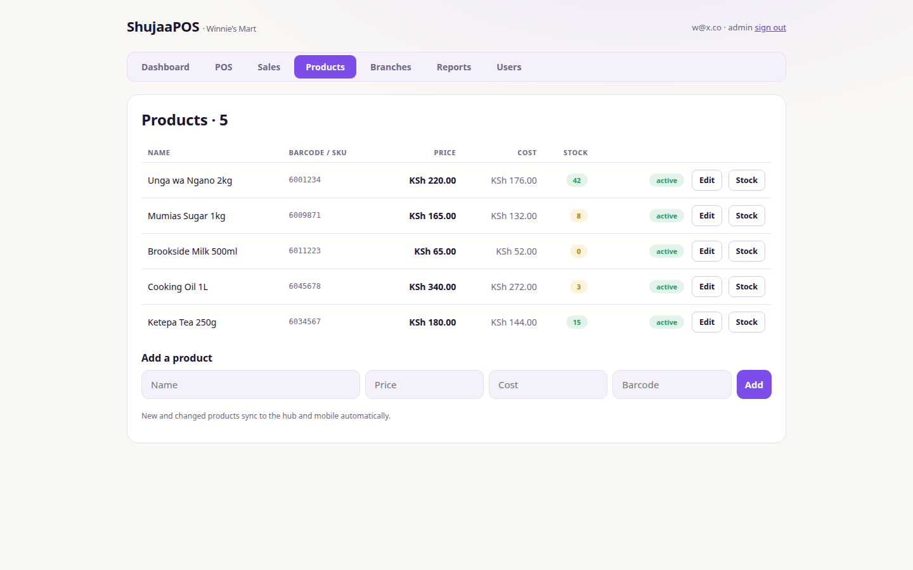

How to Manage Stock in a Retail Shop in Kenya
ShujaaPOS · November 2026 · 7 min read
Stock management is where shop money quietly leaks out. Goods expire, disappear, get priced wrong, or sit on a shelf for six months while the fast movers keep running out. Getting it under control doesn't need an MBA. It needs a few habits and, honestly, a till that counts for you.

Start with what you actually have
Before any system works, you need a real baseline. Do one full count of everything on the shelves and in the store room. Write it down or key it in. This is boring and takes an afternoon, and it's the single step most shops skip, then wonder why the numbers never add up later.
Let sales do the counting
The trick of a POS-managed stock file is that you stop counting entirely between stocktakes. Every sale reduces the count. Every delivery increases it. After a week, the number on screen is usually more accurate than a tired end-of-day recount, provided two things hold:
- Every sale goes through the till. Side sales in the notebook wreck the count.
- Every delivery gets recorded when it arrives, with the quantity that actually came in, not what was invoiced.
Set your low-stock line
Pick a threshold per product: the number below which you want to reorder. A soda moves fast, so "below 2 crates" might be right. Fancy imported biscuits might justify "below 3 pieces". In ShujaaPOS the critical-stock list flags anything under ten by default; tune it to your own thresholds as you learn your velocities.
Deal with shrinkage honestly
Stock disappears three ways: theft, damage, and expiry. Record each honestly when it happens. A damage written off as a stock adjustment keeps your books true; a damage ignored makes the theft number look bigger than it is and poisons trust with staff.
Batches and expiry
If you sell food or medicine, note batch numbers and expiry dates when stock arrives. When the KEBS or county health inspection comes, or when you need to know which batch went bad, a recorded batch beats a memory every time.
The weekly five-minute check
That's the whole loop. Count once, let the till track, reorder by threshold, and watch the three numbers weekly. Stock management stops being a headache and becomes a habit.
Try ShujaaPOS free